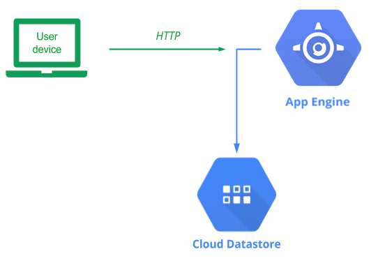
App Engine is a serverless platform (Platform-as-a-Service) that allows you to focus on writing an application, leaving the infrastructure management and deployment completely to Google Cloud. Since our application is likely to become extremely popular, being able to deploy it on something like App Engine will allow us to seamlessly scale when our service becomes popular. App Engine is very similar to Cloud Run, but in App Engine, GCP provides the environment (e.g. Python, NodeJS, Ruby) and all you need to do is provide the application code. In container-based services such as Cloud Run, you provide both the application and the environment (via a container).
Begin by enabling AppEngine in the web console or by running the following command in Cloud Shell.
gcloud services enable appengine.googleapis.comBefore we begin, we first need to understand what our application needs in terms of access to Google Cloud's services. As with most Google Cloud Platform services, a default service account with a set of permissions is automatically created when the service is enabled. For App Engine, the App Engine default service account is used when our application needs to access resources within the project. The service account takes the form of:
<GOOGLE_CLOUD_PROJECT>@appspot.gserviceaccount.com
In order to make development easy, this service account is given Editor access to the entire project. This allows your application full access to all resources on the project and if your application has a vulnerability that can be exploited, adversaries can use their access to fully compromise your project. Since our application requires only Datastore access, we will first reduce the privileges on the App Engine service account.
To do so from the web console, go to the main IAM page:
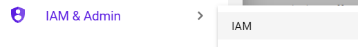
On this page, find the App Engine default service account to see that it has been given Editor permissions. On the right hand side, click on the pencil icon to edit the permission:
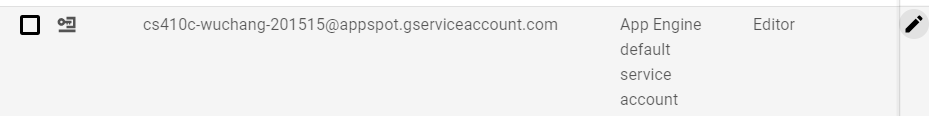
Within the dropdown, replace the Editor role with Cloud Datastore User.
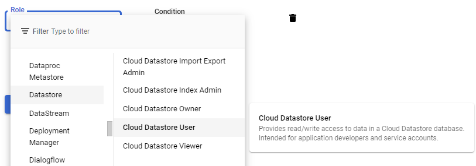
Click on Save and see that the role has been changed.
To do the same via Cloud Shell, we can run gcloud commands to select a region and create an App Engine application (This first command can be skipped if an App Engine application already exists). Then, remove the Editor role and add the Cloud Datastore User role.
gcloud app create
gcloud projects remove-iam-policy-binding ${GOOGLE_CLOUD_PROJECT} --member=serviceAccount:${GOOGLE_CLOUD_PROJECT}@appspot.gserviceaccount.com --role=roles/editor
gcloud projects add-iam-policy-binding ${GOOGLE_CLOUD_PROJECT} --member=serviceAccount:${GOOGLE_CLOUD_PROJECT}@appspot.gserviceaccount.com --role=roles/datastore.userBring up Cloud Shell and navigate to the source directory.
cd cs430-src/05_gcp_datastore
In addition to the original application code, App Engine requires a single YAML file to specify how it will run your application app.yaml. YAML is a hierarchical mark-up language that is used prevalently in the cloud. As the app.yaml file below shows, we specify a Python 3 standard environment that runs gunicorn on our application in app.py on a PORT it is given. While App Engine typically auto-scales, we'd like to initially force it to bring up 2 instances. Finally, we can specify the machine types that will be used. In this case, we will be using f1-micro instances.
# Use Python3 standard environment
runtime: python37
env: standard
# Run gunicorn on app object in app.py
entrypoint: gunicorn -b :$PORT app:app
# Spin up 2 instances
manual_scaling:
instances: 2
# Specify machine type
resources:
cpu: 1
memory_gb: 0.5
disk_size_gb: 10App Engine automatically builds a container based on your application and its app.yaml configuration which is then deployed onto the infrastructure it creates.
We can now deploy our code to App Engine. To do so, issue the following command from the directory containing the application and authorize Cloud Shell to allow it to perform the operation.
gcloud app deploy
When an application is deployed, App Engine will automatically create all of the infrastructure (e.g. Compute Engine instances, Load balancers, VPCs, subnets, etc.) to run your application. It will also automatically create a DNS name and a TLS certificate that will allow your application to serve itself over https. Wait for the command to complete and note the target URL that the application is now available at.
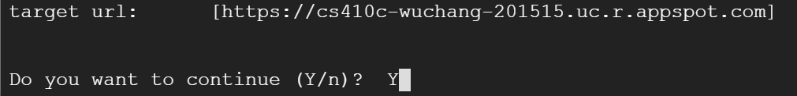
When the deployment is complete, visit the URL in a web browser. Sign the guestbook with your name and PSU e-mail address with the message "Hello App Engine!".
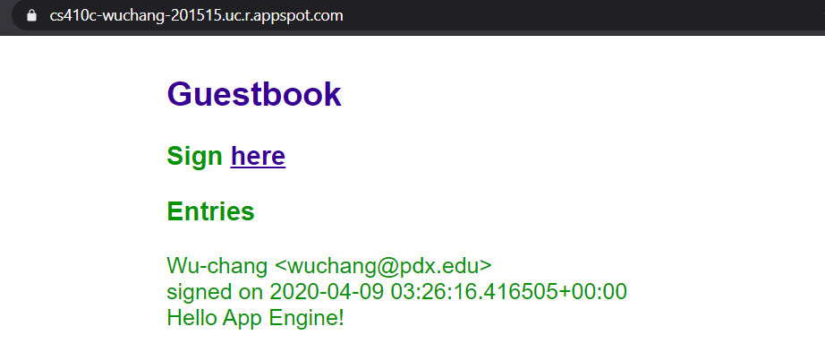
From the web console, visit the App Engine home page and click on "Instances" to view the machines that have been brought up to serve your application.
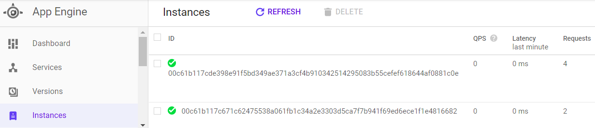
Click on one of the instances and delete it. Refresh the page and see how quickly it has been replaced by another replica in order to maintain the number of replicas specified in app.yaml. The beauty of managed platforms is that, as a developer or an operations engineer, you never have to touch any of the infrastructure to scale your application out or handle failures.
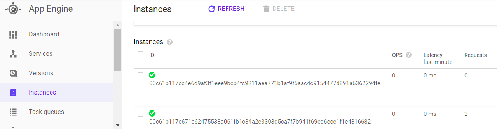
App Engine will continue to run instances for the application unless it is explicitly disabled. It is important that you shut down the application when the lab is complete. To do so, visit the App Engine console and navigate to its "Settings". Click on "Disable Application".
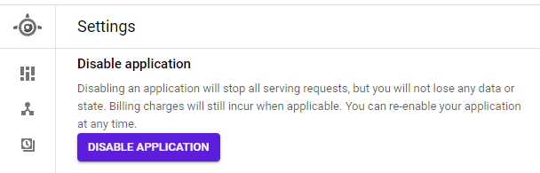
Then, navigate to "Instances" and ensure there are no deployed instances.
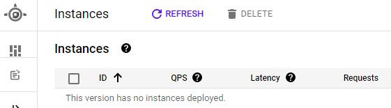
Note that if you have difficulty shutting down the instances running on App Engine, disable the service entirely
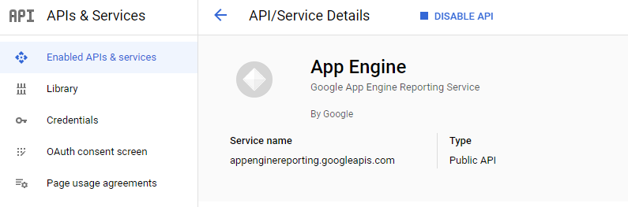